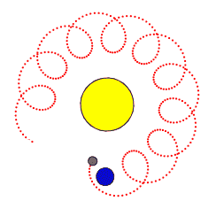

前言
课件地址
https://github.com/buglas/threejs-lesson
课堂目标
- 理解图形树的概念
- 掌握图形树的用法
知识点
图形树
坐标轴辅助对象
栅格辅助对象
dat.gui 调试工具
1-图形树的概念
图形树是three.js 的核心内容之一。
图形树的本质就是多坐标系的嵌套，之前我们在WebGL里说过世界坐标系和本地坐标系的概念，若大家理解了这个概念，也就理解了图形树。

图形树中的每个节点，都有一个独立的坐标系，因此每个节点中的图形就有一个本地坐标位。若想知道这个图形在整个Scene 场景中的位置，那就需要将其本地坐标位转换为世界坐标位。
我们之前在WebGL里说相关知识的时候，举过一个“宇宙>太阳>地球>月球”的例子，接下来咱们继续那它说事。
2-宇宙示例

上图中，黄球是太阳，篮球是地球，灰球是月球。
地球绕太阳公转，月球绕地球旋转。
从月球的角度来看，它是在地球的“局部空间”中旋转的，它只考虑绕它在地球的本地坐标系内的旋转。尽管从太阳的角度来看，它相对于太阳的运动轨迹是一条螺旋形曲线。
这就好像生活在地球上的人不必考虑地球自身的自转，也不必考虑地球绕太阳的公转，大家想怎么走就怎么走，不需要去想地球的移动或旋转。
然而，即使你在地球上坐着不动，你仍然以大约1000英里/小时的速度随地球自转，以大约67000英里/小时的速度围绕太阳公转。
接下来我们就用代码模拟一下太阳、地球和月球间的运动关系。
2-1-绘制太阳、地球和月球
1.利用咱们上一章封装的Stage对象搭建一个场景。
const stage = new Stage();
const { scene, renderer,camera } = stage;
2.设置相机的视点位、目标点和上方向，使其变成俯视状态。
camera.position.set(0, 20, 0)
camera.up.set(0, 0, -1)
camera.lookAt(0, 0, 0)
默认相机的上方向是y方向的，但当相机俯视的时候，y方向就不合适了，所以我将上方向设置为了-z方向。这就相当于我低下头俯视裁剪空间。
设置完了上方向，别忘了用lookAt() 方法设置相机的目标点，这个方法除了可以设置目标点，还可以更新相机的视图矩阵。
3.向场景中添加一个太阳。
// 太阳、地球和月亮都共用一个球体
const radius = 1;
const widthSegments = 6;
const heightSegments = 6;
const sphereGeometry = new SphereGeometry(radius, widthSegments, heightSegments);
// 太阳
const sunMaterial = new MeshPhongMaterial({emissive: 0xFFFF00});
const sunMesh = new Mesh(sphereGeometry, sunMaterial);
scene.add(sunMesh);
//需要旋转的对象集合
const objects:Object3D[] = [sunMesh]
MeshPhongMaterial 材质中的emissive 是一个自发光属性，这样它在没有光源的前提下，也能可见。
4.在场景中心添加一个点光源。
const color = 0xFFFFFF;
const intensity = 3;
const light = new PointLight(color, intensity);
scene.add(light);
5.在渲染之前，遍历objects 中的物体，使其转起来。
stage.beforeRender = (time = 0) => {
time *= 0.001
objects.forEach((obj) => {
obj.rotation.y = time
})
}
效果如下：
6.向场景中添加一个地球。
const earthMaterial = new MeshPhongMaterial({
color: 0x2233ff,
emissive: 0x112244,
})
const earthMesh = new Mesh(sphereGeometry, earthMaterial)
earthMesh.scale.set(0.5, 0.5, 0.5)
earthMesh.position.x = 5
scene.add(earthMesh)
objects.push(earthMesh)
现在我把地球添加到了Scene 场景里，那它会和太阳各转各的。
接下来，咱们改一下上面的代码，把地球放太阳系里，使其绕太阳旋转。
7.利用Group对象建立一个太阳坐标系，将太阳和地球都置入其中。
// 太阳坐标系
const solarSystem = new Group()
scene.add(solarSystem)
objects.push(solarSystem)
// 太阳
const sunMaterial = new MeshPhongMaterial({ emissive: 0xffff00 })
const sunMesh = new Mesh(sphereGeometry, sunMaterial)
solarSystem.add(sunMesh)
// 地球
const earthMaterial = new MeshPhongMaterial({
color: 0x2233ff,
emissive: 0x112244,
})
const earthMesh = new Mesh(sphereGeometry, earthMaterial)
earthMesh.scale.set(0.5, 0.5, 0.5)
earthMesh.position.x = 5
solarSystem.add(earthMesh)
现在，太阳坐标系的原点与太阳对象的中心点是一致的，旋转太阳坐标系的时候会带动太阳的自转。与此同时，还会让地球绕太阳公转。
8.用同样的原理，在地球外面再包裹一个地球坐标系，并建立月球坐标系和月球。
// 太阳坐标系
const solarSystem = new Group()
scene.add(solarSystem)
objects.push(solarSystem)
// 地球坐标系
const earthSystem = new Group()
earthSystem.position.x = 5
solarSystem.add(earthSystem)
objects.push(earthSystem)
// 月球坐标系
const moonSystem = new Group()
moonSystem.position.x = 2
earthSystem.add(moonSystem)
objects.push(moonSystem)
// 太阳
const sunMaterial = new MeshPhongMaterial({ emissive: 0xff9600 })
const sunMesh = new Mesh(sphereGeometry, sunMaterial)
solarSystem.add(sunMesh)
// 地球
const earthMaterial = new MeshPhongMaterial({
color: 0x00acec,
emissive: 0x00acec,
})
const earthMesh = new Mesh(sphereGeometry, earthMaterial)
earthMesh.scale.set(0.5, 0.5, 0.5)
earthSystem.add(earthMesh)
// 月球
const moonMaterial = new MeshPhongMaterial({
color: 0x999999,
emissive: 0x999999,
})
const moonMesh = new Mesh(sphereGeometry, moonMaterial)
moonMesh.scale.set(0.2, 0.2, 0.2)
moonSystem.add(moonMesh)
效果如下：
我们在上面的代码里，针对太阳、地球和月球建立了3个坐标系对象，这个坐标系对象是无法直接显示的，不过我们可以通过three.js 里的坐标轴辅助对象和栅格辅助对象将其显示出来。
2-2-添加辅助对象
1.建立AxesGridHelper类，用于为坐标系添加坐标轴和栅格。
import { AxesHelper, GridHelper, LineBasicMaterial, Object3D } from "three"
export default class AxesGridHelper {
grid: GridHelper
axes: AxesHelper
_visible: boolean = true
constructor(obj: Object3D, size = 2) {
const axes = new AxesHelper()
const axesMat = axes.material as LineBasicMaterial
axesMat.depthTest = false
obj.add(axes)
const grid = new GridHelper(size)
const gridMat = grid.material as LineBasicMaterial
gridMat.depthTest = false
obj.add(grid)
this.grid = grid
this.axes = axes
this.visible = this._visible
}
get visible() {
return this._visible
}
set visible(v) {
this._visible = v
this.grid.visible = v
this.axes.visible = v
}
}
2.遍历objects，以其中的坐标系为参数实例化AxisGridHelper。
objects.forEach((obj) => {
new AxesGridHelper(obj)
})
效果如下：
接下来我们还可以通过GUI工具控制辅助对象是否显示。
2-3-调试项目
1.下载dat.gui
npm i dat.gui @types/dat.gui --save
2.引入GUI工具
import { GUI } from "dat.gui"
3.实例化GUI工具
const gui = new GUI({ autoPlace: false })
autoPlace：是否将GUI的DOM 元素添加到body中，默认为true。
我这里将autoPlace设置false，是为了将GUI的DOM 元素添加到canvas 包裹器里。
const Universe: React.FC = (): JSX.Element => {
const divRef = useRef<HTMLDivElement>(null)
useEffect(() => {
const { current } = divRef
if (current) {
current.innerHTML = ""
current.append(renderer.domElement)
current.append(gui.domElement)
stage.animate()
}
}, [])
return <div ref={divRef} className="canvasWrapper"></div>
}
4.声明一个实例化AxisGridHelper 对象的方法，并将辅助对象添加到gui 中。
function makeAxesGrid(obj: Object3D, label: string) {
const helper = new AxesGridHelper(obj)
gui.add(helper, "visible").name(label)
}
- obj 坐标系对象
- label 控制器的标签名
5.基于3个坐标系，建立三个辅助对象和控制器。
makeAxesGrid(solarSystem, "solarSystem")
makeAxesGrid(earthSystem, "earthSystem")
makeAxesGrid(moonSystem, "moonSystem")
最终效果如下：
关于图形树的基本原理我们就说到这，接下来咱们再做个例子。
3-坦克
这个案例不仅会巩固大家对图形树的理解，还会告诉大家如何实现路径跟随和相机切换。
先看一下这个案例的图形树：
3-1-图形树
Scene 场景
- camera 主相机
- tank 坦克
- tankCamera 坦克相机，随坦克而动
- bodyMesh 车身模型
- wheelMeshes 车轮模型
- barrel 炮筒
- barrelMesh 炮筒模型
- barrelCamera 炮筒相机，随炮筒变换
- target 目标点
- targetBob 浮动节点-负责目标的上下浮动
- targetMesh 目标模型
- targetCameraPivot 目标相机旋转轴-带动目标相机的旋转
- targetCamera 目标相机
- targetBob 浮动节点-负责目标的上下浮动
- splineObject 坦克移动路径
- groundMesh 地面
- light 灯光
当前这个场景是简约而不简单的，其内部有许多图形嵌套，而且很多节点都是虚拟的Group对象。
Group对象就是方便模型管理和变换的，其具体用法我们后面详说。
这个场景的图形树中还嵌套着多个相机，里面有许多打镜头的套路，是非常值得我们学习的。
3-2-代码实现
1.利用之前封装的Stage 对象快速搭建场景。
const stage = new Stage()
const { scene, renderer } = stage
//背景色
renderer.setClearColor(0xaaaaaa)
//开启投影
renderer.shadowMap.enabled = true
2.建立一个静止不动的主相机，把stage的相机变成这个主相机。
const camera = makeCamera()
camera.position.set(16, 8, 20)
camera.lookAt(0, 0, 0)
stage.camera = camera
- makeCamera() 是我自定义的实例化透视相机的方法。
function makeCamera(fov = 40) {
const aspect = 2
const zNear = 0.1
const zFar = 1000
return new PerspectiveCamera(fov, aspect, zNear, zFar)
}
3.建立两道光。
{
// 平行光1
const light = new DirectionalLight(0xffffff, 1)
light.position.set(0, 20, 0)
scene.add(light)
light.castShadow = true
light.shadow.mapSize.width = 2048
light.shadow.mapSize.height = 2048
const d = 50
light.shadow.camera.left = -d
light.shadow.camera.right = d
light.shadow.camera.top = d
light.shadow.camera.bottom = -d
light.shadow.camera.near = 1
light.shadow.camera.far = 50
}
{
// 平行光2
const light = new DirectionalLight(0xffffff, 1)
light.position.set(1, 2, 4)
scene.add(light)
}
4.地面
const groundGeometry = new PlaneGeometry(50, 50)
const groundMaterial = new MeshPhongMaterial({ color: 0xcc8866 })
const groundMesh = new Mesh(groundGeometry, groundMaterial)
groundMesh.rotation.x = Math.PI * -0.5
groundMesh.receiveShadow = true
scene.add(groundMesh)
5.建立坦克Group，在其中放一个随坦克而动的相机。
// 坦克
const tank = new Group()
scene.add(tank)
// 坦克相机
const carRadius = 1
const bodyCenterY = (carRadius * 3) / 2
const tankCameraFov = 75
const tankCamera = makeCamera(tankCameraFov)
tankCamera.position.y = 5
tankCamera.position.z = -10
tankCamera.lookAt(0, bodyCenterY, 0)
tank.add(tankCamera)
6.建立坦克车身，放坦克Group里，这就是一个球。
const bodyGeometry = new SphereGeometry(carRadius)
const bodyMaterial = new MeshPhongMaterial({ color: 0x6688aa })
const bodyMesh = new Mesh(bodyGeometry, bodyMaterial)
bodyMesh.position.y = bodyCenterY
bodyMesh.castShadow = true
tank.add(bodyMesh)
7.建立两个车轱辘，放坦克Group里。
const wheelRadius = 0.6
const wheelThickness = 0.5
const wheelSegments = 8
const wheelGeometry = new CylinderGeometry(
wheelRadius,
wheelRadius,
wheelThickness,
wheelSegments
)
const wheelMaterial = new MeshPhongMaterial({ color: 0x888888 })
const cx = carRadius + wheelThickness / 2
const wheelMeshes = [-cx, cx].map((x) => {
const mesh = new Mesh(wheelGeometry, wheelMaterial)
mesh.rotation.z = Math.PI * 0.5
mesh.position.set(x, wheelRadius, 0)
mesh.castShadow = true
tank.add(mesh)
return mesh
})
8.建立炮筒Group，把炮筒模型和炮筒相机放进去，炮筒相机会随炮筒变换。
// 炮筒
const barrel = new Group()
barrel.position.y = bodyCenterY + 0.3
tank.add(barrel)
// 炮筒模型
const barrelSize = 0.3
const barrelLength = 5
const barrelGeometry = new BoxGeometry(barrelSize, barrelSize, barrelLength)
const barrelMesh = new Mesh(barrelGeometry, bodyMaterial)
barrelMesh.position.z = barrelLength / 2
barrelMesh.castShadow = true
barrel.add(barrelMesh)
// 炮管相机
const barrelCamera = makeCamera()
barrelCamera.position.y = 1.4
barrel.add(barrelCamera)
9.建立目标点Group，把目标点模型和目标相机放进去。
// 目标-负责目标的整体高度
const target = new Group()
target.position.z = 2
target.position.y = 4
scene.add(target)
// 浮动节点-负责目标的上下浮动
const targetBob = new Group()
target.add(targetBob)
// 目标模型
const targetGeometry = new SphereGeometry(0.5, 6, 3)
const targetMaterial = new MeshPhongMaterial({
color: 0x00ff00,
flatShading: true,
})
const targetMesh = new Mesh(targetGeometry, targetMaterial)
targetMesh.castShadow = true
targetBob.add(targetMesh)
// 目标相机
const targetCamera = makeCamera()
targetCamera.position.y = 1
targetCamera.position.z = -2
targetCamera.rotation.y = Math.PI
// 目标相机旋转轴-带动目标相机的旋转
const targetCameraPivot = new Group()
targetBob.add(targetCameraPivot)
targetCameraPivot.add(targetCamera)
之后在连续渲染的时候，目标点会通过targetBob 对象上下浮动。
targetBob.position.y = Math.sin(time * 2) * 2
在连续渲染方法里，目标相机会通过targetCameraPivot 对象进行旋转，看向坦克。
// 获取目标点的世界位
targetMesh.getWorldPosition(targetPosition)
// 炮筒指向目标点
barrel.lookAt(targetPosition)
重点解释一下，我们为什么不直接让目标相机targetCamera看向坦克，而是让一个包裹了相机的targetCameraPivot 看向坦克。
首先，我想要的效果是让目标相机站在目标点后面看向坦克，这样我既能看见一部分目标点，也能看见坦克，效果如下：
这样我就需要把相机视点放在目标点后面：
const targetCamera = makeCamera()
//设置目标点位置
targetCamera.position.y = 1
targetCamera.position.z = -2
//让相机视线朝向z轴正方向，默认相机视线朝向-z
targetCamera.rotation.y = Math.PI
来个俯视的示意图：
接下来，我们若直接让相机看向坦克，那目标点就会移出相机视口：
所以我需要在相机外面再包裹一个Group对象，用Group对象的旋转，带动相机绕目标点旋转：
10.建立一条路径，之后会让坦克沿此路径移动。
//坦克移动路径
const curve = new SplineCurve([
new Vector2(-6, 5),
new Vector2(-6, -4),
new Vector2(8, 0),
new Vector2(-6, 12),
new Vector2(-6, 5),
])
const points = curve.getPoints(50)
const geometry = new BufferGeometry().setFromPoints(points)
const material = new LineBasicMaterial({ color: 0xff0000 })
const splineObject = new Line(geometry, material)
splineObject.rotation.x = Math.PI * 0.5
splineObject.position.y = 0.05
scene.add(splineObject)
11.提前声明好三个向量。
// 坦克位置
const tankPosition = new Vector2()
// 坦克朝向
const tankTarget = new Vector2()
// 目标位
const targetPosition = new Vector3()
- tankPosition和tankTarget之后会从curve路径中获取。
- targetPosition 是暂存目标对象的世界位的。
12.用GUI切换相机。
const gui = new GUI({ autoPlace: false })
const cameras: Map<string, PerspectiveCamera> = new Map([
["camera", camera],
["barrelCamera", barrelCamera],
["targetCamera", targetCamera],
["tankCamera", tankCamera],
])
const curCamera = { name: "camera" }
gui.add(curCamera, "name", [...cameras.keys()]).onChange((key: string) => {
const {
domElement: { clientWidth, clientHeight },
} = renderer
const cam = cameras.get(key)
if (cam) {
stage.camera = cam
stage.camera.aspect = clientWidth / clientHeight
stage.camera.updateProjectionMatrix()
}
})
13.在连续渲染的时候，让坦克、目标对象和相机动起来。
// 渲染之前
stage.beforeRender = (time = 0) => {
time *= 0.001
// 坦克移动插值
const tankTime = time * 0.1
// 坦克位置
curve.getPointAt(tankTime % 1, tankPosition)
// 坦克朝向
curve.getPointAt((tankTime + 0.01) % 1, tankTarget)
// 设置坦克位置
tank.position.set(tankPosition.x, 0, tankPosition.y)
// 设置坦克朝向
tank.lookAt(tankTarget.x, 0, tankTarget.y)
// 车轱辘的滚动
wheelMeshes.forEach((obj) => {
obj.rotation.x = time * 3
})
// 目标对象的上下浮动
targetBob.position.y = Math.sin(time * 2) * 2
// 获取目标点的世界位
targetMesh.getWorldPosition(targetPosition)
// 炮筒指向目标点
barrel.lookAt(targetPosition)
if (curCamera.name === "barrelCamera") {
// 炮筒相机看向目标点
barrelCamera.lookAt(targetPosition)
} else if (curCamera.name === "targetCamera") {
// 目标相机看向坦克
tank.getWorldPosition(targetPosition)
targetCameraPivot.lookAt(targetPosition)
}
}
上面的坦克在做移动的时候，是基于一个取值范围在[0,1]间的插值 ，用curve 的getPointAt() 方法获取的点位。
关于坦克案例，咱们就说到这，下节课我们会说一下材质。